What is light?
- Light is energy in the form of electromagnetic waves.
- Electric charge is the source of electric field lines and
charges communicate through electric field
lines.
- The human eye can only detect a tiny sliver of the
electromagnetic spectrum (400-700 nm).
- White light can be considered a combination of all wavelengths. The
colors seen when white light is passed through a prism and broken into a
rainbow are:Violet
Indigo Blue
Green Yellow
Orange Red
- Each wavelength within the visible range produces a
perception of color.
- Note, however, that the same color can also be produced by a
combination of wavelengths because of "physiological color arithmetic"
(see below).
- Electromagnetic waves tend to interact with
objects of roughly the same size as the wavelength.
- Short-wavelength radiation (UV, x-rays, gamma rays) is called ionizing
radiation because it has the potential to ionize an atom or molecule and
produce highly reactive species (radicals). These ionizations, if enough
occur, can be destructive to biological tissue. If damage involves DNA,
cancer can result.
- Long-wavelength radiation (visible light, microwaves, and radio waves)
is called non-ionizing radiation because its wavelength is much bigger than
atoms and molecules, which therefore cannot be chemically altered by this
radiation. Long-wavelength radiation is not considered harmful to biological
tissue.
- The atmosphere has "windows" which tend to
filter out much of the harmful short-wavelength components.
- Visible light and radio waves mostly get through unimpeded.
- Infrared and ultraviolet are partly blocked.
- X-rays and gamma rays are completely blocked. Why is
Lois Lane feeling sick?
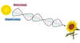
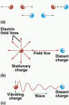
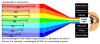
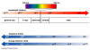
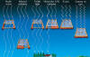
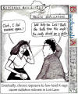
Line vs Continuous
- Light which passes through a spectroscope produces 3 types of spectra:
- Continuous (rainbow) spectrum—produced
by a hot, dense object. A continuous spectrum is also called blackbody
radiation.
- This
applet
demonstrates the temperature-wavelength relationship of blackbody
radiation.
- Emission spectrum—produced by a hot, rarefied gas against a dark
background.
- Absorption spectrum—produced by a cool gas against a background of a
hot, dense object.
- For a line spectrum, the background determines whether
the
line spectrum is an emission or absorption spectrum.
- Density determines whether the spectrum is a line spectrum (low density)
or a continuous spectrum (high density).
- Some examples:
- An incandescent light bulb produces a continuous spectrum because the
source of the light is a metal filament (wire).
- A continuous spectrum emanates from the dark parts of the universe. The
peak of this radiation corresponds to a temperature of about 2.7 degrees
Kelvin. This radiation, known as Cosmic Background
Radiation, (CBR) represents the 'echo' of the original Big Bang and is
considered an important piece of evidence supporting the Big Bang Theory.
- A fluorescent light produces an emission spectrum because the source of
the light is an 'excited' gas.
- Stellar spectra are generally absorption spectra because some absorption
is occurring in the relatively cool atmosphere of the Sun. The dark
absorption lines in the spectrum of our Sun are called Fraunhofer lines.
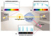
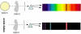
Line spectra
- Metals (and other elements) produce a characteristic color when put into
a flame.
- The light from any vaporized element produces its own unique set of
lines when sent through a slit and then through a
prism. This is the basis of spectroscopy.
- Each spectral line corresponds to an electronic
transition from one energy level to
another. Click here for an illustrative
animation.
- Atomic hydrogen produces a series
of characteristic line spectra in the ultraviolet, visible, and infrared
parts of the total spectrum.
- The visible light spectra of hydrogen always consist of two
violet lines, a blue-green line, and a bright red one.
- Line strength is not only a function of source concentration (more
atoms, more signal) but is also a strong
function of temperature. A star with a surface temperature of 6000 K, for instance,
will exhibit a stronger signal for calcium than for hydrogen, even though it
has a lot more hydrogen.
- Because of their strong spectroscopic dependence on temperature,
stars are classified on the basis of
temperature.
- Spectral lines can also be broadened by several factors:
- rotation--one side of a star is red-shifted, the other is blue shifted (Doppler
broadening)
- magnetic fields--which "smear" energy levels
- increasing density or pressure in the gas--this again "smears" energy levels
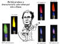
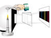
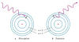
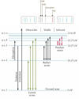
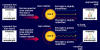
![Diagram illustrating the use of spectra to determine stellar rotation. At top left is a white disk representing a non-rotating star as seen from above one of its poles. Three equally wavy arrows point downward, representing light emitted from this star, headed toward Earth. Immediately below the wavy arrows is a spectrum with one narrow absorption line in the middle. Below the spectrum a graph is shown, with luminosity on the vertical axis and wavelength on the horizontal. A curve is plotted which begins as a horizontal line about 3/4 of the way up the luminosity scale then dips sharply downward to near zero luminosity and then back up again to the original horizontal level. This sharp, narrow, and deep line is indicative of no or very slow rotation. On the top right another white disk is shown, with a circular arrow within, indicating its rotation. The left side of the rotating star is moving toward the observer, and the right hand side is moving away. The three wavy arrows are different than those for the non-rotating star. The rotating star’s left-most arrow has many waves representing short (blue) wavelengths, its central arrow has fewer waves, and the right-most arrow has the least waves representing long (red) wavelengths. The spectrum of the rotating star has a much broader absorption line. The rotating star’s graph also plots luminosity versus wavelength, but its curve is much broader and less deep than the non-rotating star.](media/rotation_broadening_small.jpg)
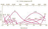
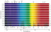
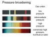
Doppler effect
- The Doppler effect applies to all
waves, including sound and light.
- This
video might be helpful in visualizing the Doppler effect.
- The Doppler effect is the apparent shift in wavelength (or frequency) of
light (or any other wave) due to the relative motion of source and observer:
- Red Shift: The distance between
the observer and the source is increasing.
- Blue Shift: The distance between
the observer and the source is decreasing.
- Distant galaxies are moving away from us (and from each other) and are
thus red-shifted (see Big Bang page).
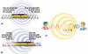
What can we learn by analyzing starlight?
- A star’s temperature
- by peak wavelength (Wien's
law). Wien's laws states that temperature and peak wavelength
are inversely related. As one gets bigger by some factor, the other gets
smaller by the same factor.
-
strength of spectral lines
- A star’s chemical composition
- A star's motion
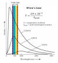
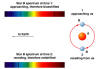
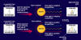
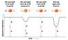
Vision and color perception
- Human eyes have a light-sensitive layer--the
retina--which carries two types of light-sensitive cells:
rods and cones.
- Rods are sensitive to dim light (scotopic vision) but do not provide
color information. Rods are responsible for vision at night (scotopic
vision), but offer very poor resolution (about the same as 20/200 vision
in daylight).
- Cones respond only to relatively bright light but relay information
about 3 colors--red, green and blue
(RGB).
These are the so-called primary colors.
- The light response of the rods
peaks sharply in the blue-green (507 nm). Rods respond very poorly to
red light.
- Bright sunlight is about one billion times brighter than the dimmest
light in which the rods can operate.
- For greatest acuity look straight; for greatest sensitivity, look to the
side.
- Rods and cones are not evenly distributed on the retina. Cones are concentrated centrally, in an
area called fovea, while rods more concentrated away from the center.
- Any visual task that requires seeing fine detail (e.g.,
reading the letters on this webpage) uses the
fovea,
a small area on the retina with only cones and no blood. The
fovea sees only the central two degrees of the visual field,
roughly equivalent to twice the width of your thumbnail at arm's length.
At night, the fovea becomes the "night blind spot".
- To see a very faint object, we need to involve as many rods as possible.
Rods are largely responsible for peripheral vision and are more
sensitive to dim light and motion. The most sensitive portion of the eye usually turns out to be 8-16
degrees away from the center. (The fovea contains only cone cells, which
serve as bright light and color detectors but are not as useful in night
vision.) Looking a bit with the side of the eye, a technique known as
averted vision, is very useful to astronomers, as it often allows
them to see especially faint or otherwise invisible objects. The most
effective direction is that which places the object on the nasal side of
the vision. Some observers report a gain of up to 3-4 magnitudes. There
is some evidence that the technique has been known since ancient times.
- In a similar technique, known as scope rocking, the
telescope is moved back and forth slightly to move the object around in
the field of view. This technique is based not only on the greater
density of rods away from the center of the eye but also on the fact
that rods are more sensitive to motion than to static objects.
- Honeybees and
bumblebees have trichromatic (i.e., with 3 color-sensitive
receptors) color vision, which is insensitive to red but sensitive in
ultraviolet to a color called bee purple.
- Snakes are more sensitive to infrared.
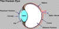
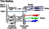
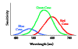
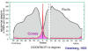
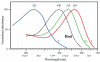
Color Arithmetic
- Some objects appear a certain color because they emit light with that
color (or combination wavelengths). Other objects appears a certain color
because they reflect that color.
- A red light is red because it emits red light.
- A red apple appears red in white
light (which is a combination of red, green, and blue) because it
reflects red light and absorbs (much of) the other colors (green and
blue).
- In blue light, the apple would appear black because it absorbs blue and no
light would therefore bounce off the apple.
- Similarly, the green leaves reflect green and absorb the other
colors. The leaves would therefore appear green in green or white light
and would appear black in blue or red light.
- The apparent color of stars depends on the relative intensity of the
various wavelengths.
- Bright cool stars appear red because they have a lot more intensity
on the red end of the spectrum than on the blue end.
- Bright hot stars appear blue because they have a lot more intensity
on the blue end of the spectrum than on the red end.
- Dim stars, irrespective of wavelength distribution appear white
because only the rods are active in dim light.
- Stars are never green because if there is enough intensity in the
green (middle) part of the spectrum, there is generally enough in the
neighboring bluish and reddish, so the perception is white.
- This video should be a
nice visual of these considerations.
- Click
here for an applet on color arithmetic
to get a feel for the different color possibilities.
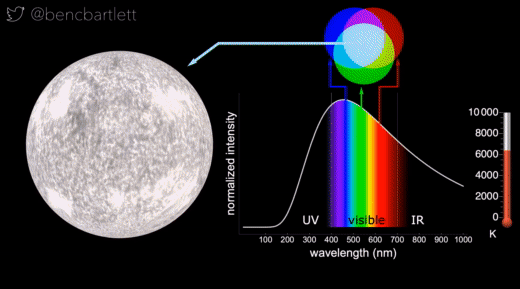


![Diagram illustrating the use of spectra to determine stellar rotation. At top left is a white disk representing a non-rotating star as seen from above one of its poles. Three equally wavy arrows point downward, representing light emitted from this star, headed toward Earth. Immediately below the wavy arrows is a spectrum with one narrow absorption line in the middle. Below the spectrum a graph is shown, with luminosity on the vertical axis and wavelength on the horizontal. A curve is plotted which begins as a horizontal line about 3/4 of the way up the luminosity scale then dips sharply downward to near zero luminosity and then back up again to the original horizontal level. This sharp, narrow, and deep line is indicative of no or very slow rotation. On the top right another white disk is shown, with a circular arrow within, indicating its rotation. The left side of the rotating star is moving toward the observer, and the right hand side is moving away. The three wavy arrows are different than those for the non-rotating star. The rotating star’s left-most arrow has many waves representing short (blue) wavelengths, its central arrow has fewer waves, and the right-most arrow has the least waves representing long (red) wavelengths. The spectrum of the rotating star has a much broader absorption line. The rotating star’s graph also plots luminosity versus wavelength, but its curve is much broader and less deep than the non-rotating star.](media/rotation_broadening.jpg)